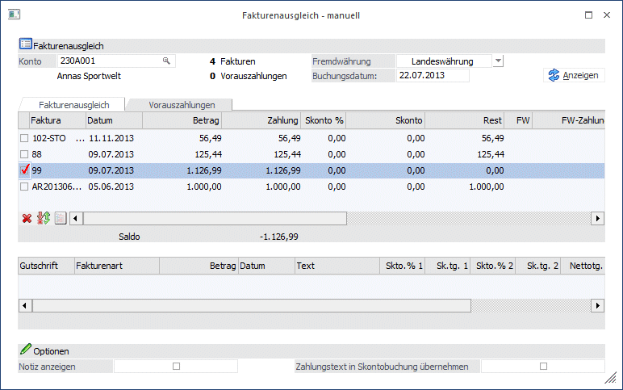
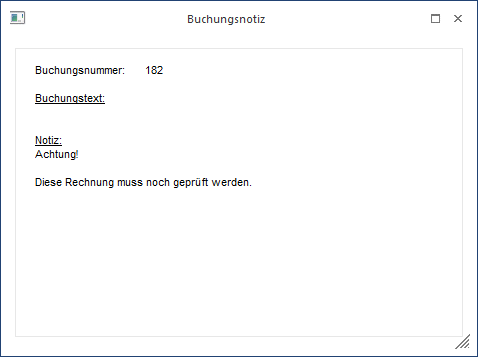
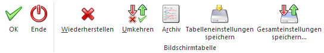
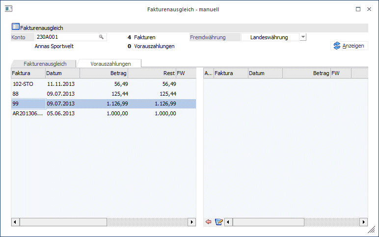
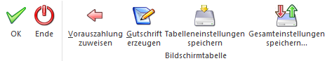

Im Menüpunkt
1 Buchen
1 Fakturenausgleich
1 manuell
können Fakturen und Gutschrift, Vorauszahlungen zugewiesen bzw. nur Fakturen ausgeglichen werden.

Im Gegensatz zum automatischen Fakturenausgleich (dort können nur Fakturen mit gleichen Betrag - einmal positiv - einmal negativ - miteinander ausgeglichen werden) können im Fakturenausgleich manuell auch einzelne Fakturen ausgeglichen werden.
Nach Eingabe der Kunden-/Lieferantennummer werden alle für dieses Konto gespeicherten Fakturen angezeigt.
Neben der Fakturennummer wird das Fakturendatum, der Fakturenbetrag, eventuelle Teilzahlungen, gewährte Skontobeträge, der Restbetrag, FW-Informationen, die aktuelle Mahnstufe, Deb/Kred-Gegenkonten, Kostenträger, Projektnummer, Fakturen-Text, Zahlungstext und das OP-Kennzeichen angezeigt, wobei nur die Felder "Zahlung", "Skonto" und "Zahlungstext" bearbeitet werden können.
Der Zahlungstext wird in das Feld "OP-Text" des Zahlungs-Datensatzes übernommen.
Durch Anklicken der Checkbox, die sich in der Spalte vor der Fakturennummer befindet, wird die entsprechende Faktura zum Ausgleichen markiert.
Unter der ersten Tabelle wird der Saldo der auszugleichenden Fakturen angezeigt. Durch Aktivieren einer Faktura wird der Saldo vermindert, durch Aktivieren einer Gutschrift wird der Saldo erhöht.
In der zweiten Tabelle erfolgt die Vergabe einer Ersatzfakturennummer.
Sie haben die Möglichkeit im Zuge des manuellen Fakturenausgleiches Offene Posten Beträge auf mehrere Zeilen aufzuteilen. In dieser Tabelle sind auch evtl. Kostenrechnungsdaten für Skontobuchungen einzutragen.
Folgende Felder können in der unteren Tabelle bearbeitet werden:
Ø Gutschrift
Sie erhalten die Ersatzfakturennummer die in den OP-Parametern (FIBU/Stammdaten/Offenen Posten-Parameter) eingetragen ist vorgeschlagen. Diese Nummer können Sie noch manuell überschreiben.
Ø Vorauszahlung
Es ist möglich, den Differenzbetrag als Vorauszahlung zu definieren. Dazu muss in dieser Spalte "Vorauszahlung" selektiert werden. Wählen Sie die Registerkarte "Vorauszahlungen", um diesen Betrag einer Faktura zuzuweisen. Weiters kann in diesem Fenster die Vorauszahlung in eine Gutschrift umgewandelt werden.
Ø Betrag
Es wird der Restbetrag vorgeschlagen, den Sie manuell noch editieren können, um eine Aufteilung auf mehrere Zeilen durchzuführen.
Ø Datum
Es wird das Tagesdatum vorgeschlagen das noch editiert werden kann.
Ø Skonto %
Hier kann ein beliebiger Prozentsatz eingegeben werden. Dadurch wird automatisch der Skontobetrag aus dem skontierbaren Fakturenbetrag errechnet.
Ø Skonto
Eingabe des Skontobetrages, falls die Rechnung unter Abzug eines Skontos bezahlt wurde. Durch Drücken der F3-Taste kann der abzugsberechtigte Skontobetrag in das Eingabefeld übernommen werden.
Ø Text
Eingabe eines OP-Textes. Standardmäßig wird als Text der Buchungstext bei den OP-Zeilen im oberen Bereich übernommen. Hier kann dieser Text editiert werden. Durch Drücken der F9-Taste wird das Fenster "Fakturen-Notiz" geöffnet, in dem ein beliebig langer Text zu dieser Faktura eingegeben werden kann. Standardmäßig wird die Buchungsnotiz aus der Sachbuchungszeile übernommen.
Ø Zahlungskonditionen
Die Konditionen werden vom Debitoren- bzw. Kreditorenstamm übernommen und vorgeschlagen:
Sk.frist 1: Skontotage 1
Skonto 1 %
Sk.frist 2: Skontotage 2
Skonto 2 %
Nettotage
Diese Felder können noch editiert werden.
Ø OP-Kennzeichen
Das Zahlungskennzeichen wird aus dem Personenkontenstamm vorgeschlagen (Zahlungskennz. in FIBU-Fenster) und kann in der Faktura übersteuert werden. Im Zahlungsverkehr kann der Zahlungsvorschlag nach diesem Kennzeichen selektiert werden (z.B. Fakturen, die mit Scheck gezahlt werden, sollen von einer bestimmten Hausbank überwiesen werden, etc.).
Ø Kostenträger
Eingabe eines Kostenträgers zur Zuordnung von Skontobuchungen auf einzelne Projekte. Die Hinterlegung einer Kostenstelle für Skontobuchungen ist nur einmalig im CWL-Start in den KORE-Parametern durchzuführen.
Ø Projektnummer
Eingabe oder Auswahl über den Matchcode (F9) einer vorhandenen Projektnummer eines Kunden- oder Serviceprojektes.
Beispiel
Eine Gutschrift von 10.000,-- steht einer Faktura von 12.000,-- gegenüber. Grundsätzlich gibt es zwei Möglichkeiten, die Gutschrift zu behandeln:
1. Möglichkeit - es soll eine neue Faktura über den Restbetrag erstellt werden.
Es müssen beide Einträge über die Checkbox selektiert werden. Als Saldo wird im Fuß der Tabelle -2.000,-- angezeigt. Über diesen Betrag soll auch die neue Faktura erstellt werden. Durch Hineinklicken in der ersten Zeile der unteren Tabelle erhalten Sie eine Ersatzfakturennummer und den Restbetrag vorgeschlagen. Sie können den Restbetrag auch auf mehrere Zeilen aufteilen.
2. Möglichkeit - die Gutschrift soll der Faktura als Teilzahlung zugeordnet werden.
Es müssen beide Einträge über die Checkbox selektiert werden. Bei der Faktura wird aber in das Feld "Zahlung" gewechselt, wo durch Drücken der F3-Taste der Zahlungsbetrag (in diesem Fall von 10.000,--) übernommen wird. Dadurch wird die Gutschrift der Faktura zugeordnet, wobei diese Zuordnung wie eine Zahlung behandelt wird.
WICHTIG
Gleichzeitig mit der OP-Auszifferung wird eine "Referenz-Journalzeile" mit dem Schlüssel DZ bzw. KZ sowie dem Buchungstext "Fakturenausgleich" erstellt, damit jederzeit später ersichtlich ist, wann welche Faktura mit welcher Gutschrift ausgeziffert worden ist.
Hinweis
ü Da diese "Referenz-Journalzeile"
auch im Buchungsstorno zur Verfügung steht, kann damit ein solcher
Auszifferungs-Vorgang durch einfaches Stornieren der
"Fakturenausgleichs-Journalzeile" wieder storniert werden, d.h. es werden
Stornozeilen in der OP gebucht und die Fakturen wieder auf den Status "offen"
gesetzt.
Ist die nachträgliche Buchungsbearbeitung aktiviert, können nach dem
Storno eines Fakturenausgleichs die betroffenen, noch nicht festgeschriebenen
Fakturen- und Zahlungszeilen nicht bearbeitet werden.
ü Da es sich bei diesen automatisch erstellten Fakturenausgleichsbuchungen um rein informative Buchungszeilen handelt (also einen dokumentativen Charakter haben) können diese Buchungszeilen im Journaldruck auf Wunsch auch ausgeblendet werden (siehe Punkt "Auswertungen/Journal).
ü Der "Fakturenausgleich manuell" steht auch für Vorjahre zur Verfügung. D.h. jedoch, dass in den Tabellen nur jene Offenen Posten angezeigt werden, die bis zum ausgewählten Wirtschaftsjahr erzeugt wurden, aber keine OPs aus darauffolgenden Jahren. (Teilzahlungen werden für die angezeigten Offenen Posten jedoch aus allen Jahren berücksichtigt!).
Weitere Möglichkeiten
Zusätzlich gibt es die Möglichkeit, eine automatische Skontobuchung durchzuführen.
Vorgangsweise
Zuerst muss die Faktura, für die ein Skonto gebucht werden soll, aktiviert werden. Als nächstes muss der Zahlungsbetrag auf 0 gesetzt werden (da sonst die gesamte Faktura ausgeziffert und eine neue Faktura erstellt wird). Im Feld Skonto wird dann der Betrag eingegeben, über den der Skonto gebucht werden soll. Durch Drücken der F5-Taste wird der Fakturenausgleich (sprich die Teilzahlung über den Skontobetrag inkl. Sachbuchung) durchgeführt.
Wenn alle Selektionen durchgeführt wurden und sich der Saldo nicht auf 0 ausgeht, kann in der unteren Tabelle eine "Gutschrifts Nr." für einen neuen OP eingegeben werden. Wird in diesem Feld keine individuelle Fakturennummer eingetragen, wird für die Erstellung des OPs die Ersatzfakturennummer aus den OP-Parametern angezeigt und verwendet.
Optionen
Ø Notiz anzeigen
Ist diese Checkbox aktiv, wird ein Notiz-Info-Fenster mit den im Formular definierten Infos zur aktuell ausgewählten OP-Zeile angezeigt.

Ø Zahlungstext in Skontobuchung übernehmen
Wird diese Checkbox aktiviert, wird der Zahlungstext, der in einer eigenen Spalte in der oberen Tabelle zu jeder Faktura eingetragen werden kann, auch in das Feld "Buchungsnotiz" der Skonto-Buchung übernommen.
Buttons

Ø Ok
Durch Anklicken des OK-Buttons werden alle markierten Fakturen ausgeglichen und (falls ein Saldo übrigbleibt) die neue Faktura erstellt.
Ø Ende
Durch Anklicken des ENDE-Buttons wird das Fenster geschlossen - es werden keine Fakturen ausgeglichen.
Ø Wiederherstellen
Wenn der Wiederherstellen-Button angeklickt wird, werden alle vorgenommenen Selektionen in der Tabelle verworfen und man erhält wieder den Ausgangsstand.
Ø Umkehren
Durch Anklicken des Umkehren-Buttons werden alle vorgenommenen Selektionen in das Gegenteil umgewandelt - selektierte Fakturen werden deselektiert, deselektierte Fakturen werden selektiert.
Beispiel
In der Tabelle gibt es 100 Einträge, wovon 90 selektiert werden sollen. Da das Selektieren von 90 Einträgen lange dauert, werden einfach die 10 Einträge, die eigentlich nicht selektiert werden sollen, selektiert. Danach wird der Umkehr-Button angeklickt - jetzt sind 90 Einträge selektiert.
Ø Archiv
Wenn das Programm WinLine Archiv eingesetzt und auch verwendet wird, kann durch Anklicken dieses Buttons nach dem Ursprungsbeleg (z.B. die ausgedruckte Faktura) angesehen werden. Nähere Informationen dazu entnehmen Sie bitte dem WinLine Archiv - Handbuch.
Ø Tabelleneinstellungen speichern
Die Spalten einer Tabelle können grundsätzlich an beliebige Positionen verschoben, bzw. in der Breite entsprechend angepasst werden. Durch Anwahl des Buttons "Tabelleneinstellungen speichern" werden die Einstellungen benutzerspezifisch gespeichert und bei dem nächsten Aufruf des Programmpunktes wieder vorgeschlagen.
Ø Gesamteinstellungen speichern
Im Gegensatz zu "Tabelleneinstellungen speichern" können mit "Gesamteinstellungen speichern" mehrere Tabellenaufbauten gespeichert und nach Wunsch geladen werden. Zusätzlich werden Sonderfunktionen der Tabelle (z.B. "Spalte gruppieren") ebenfalls bei der Speicherung bedacht.

Im Register "Vorauszahlungen" können erfasste Vorauszahlungen zu Fakturen zugewiesen werden. In der linken Tabelle werden die Fakturen und Gutschriften aufgelistet und in der rechten Tabelle die erfassten Vorauszahlungen des Debitors.
Um eine Vorauszahlung einer Faktura zuzuweisen, selektieren Sie in der linken Tabelle die gewünschte Faktura und aktivieren in der rechten Tabelle die passende Vorauszahlung. Nun wird in der Spalte "Rest" in der linken Tabelle der Restbetrag um den Fakturenbetrag vermindert. Um die Zuweisung durchzuführen, klicken Sie den "Vorauszahlung zuweisen" Button.
Weiters ist es in diesem Register möglich, Vorauszahlungen in Gutschriften umzuwandeln. Um das durchzuführen, aktivieren Sie die Checkbox neben der Vorauszahlung und klicken anschließend auf den "Gutschrift erzeugen" Button.
Hinweis
Wird eine Vorauszahlung einer Faktura zugewiesen, wird die Projektnummer aus der Vorauszahlung gelöscht, es gilt dann nur noch die Projektnummer der Faktura.
Buttons

Ø OK
Durch Anklicken des OK-Buttons werden alle markierten Fakturen ausgeglichen und (falls ein Saldo übrigbleibt) die neue Faktura erstellt.
Ø Ende
Durch Anklicken des ENDE-Buttons wird das Fenster geschlossen - es werden keine Fakturen ausgeglichen.
Ø Vorauszahlungen zuweisen
Weist die mittels Checkbox markierte Vorauszahlung der zuvor ausgewählten Faktura zu.
Ø Gutschrift erzeugen
Wandelt die mittels Checkbox markierte Vorauszahlung in eine Gutschrift um.
Ø Tabelleneinstellungen speichern
Die Spalten einer Tabelle können grundsätzlich an beliebige Positionen verschoben, bzw. in der Breite entsprechend angepasst werden. Durch Anwahl des Buttons "Tabelleneinstellungen speichern" werden die Einstellungen benutzerspezifisch gespeichert und bei dem nächsten Aufruf des Programmpunktes wieder vorgeschlagen.
Ø Gesamteinstellungen speichern
Im Gegensatz zu "Tabelleneinstellungen speichern" können mit "Gesamteinstellungen speichern" mehrere Tabellenaufbauten gespeichert und nach Wunsch geladen werden. Zusätzlich werden Sonderfunktionen der Tabelle (z.B. "Spalte gruppieren") ebenfalls bei der Speicherung bedacht.